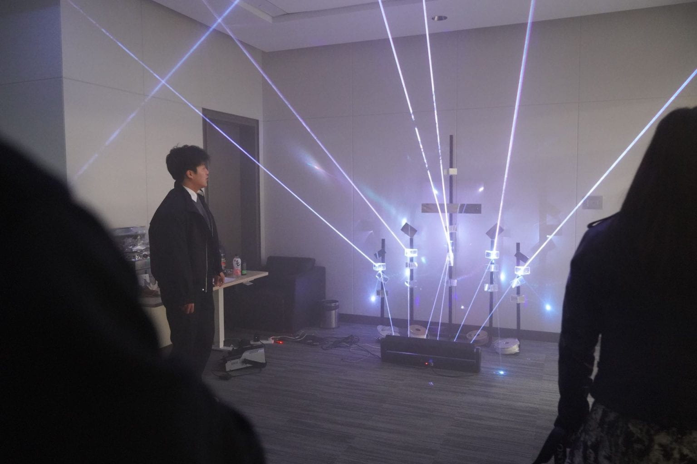
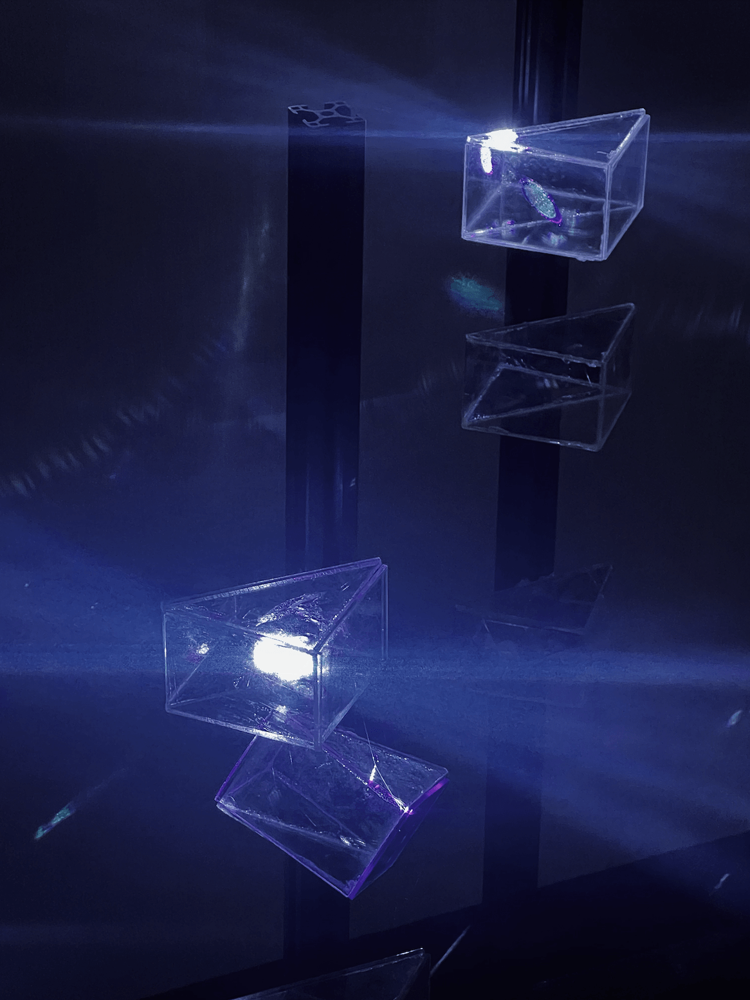

2025
Pulse asks what a performance becomes when its rhythm is written in light. Five columns hold fifteen acrylic prisms that refract RGB laser beams into mirrored paths: a visual bianzhong that plays without sound. Beam angles, color transitions and strobe pulses are all scripted as Arduino-driven DMX segments, so the light plays like a percussion score. The piece runs as a two-minute loop and was presented in EB115 at NYU Shanghai.

